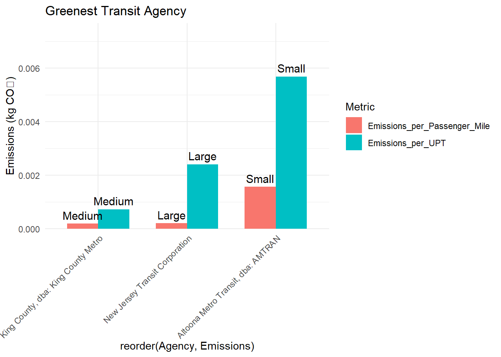
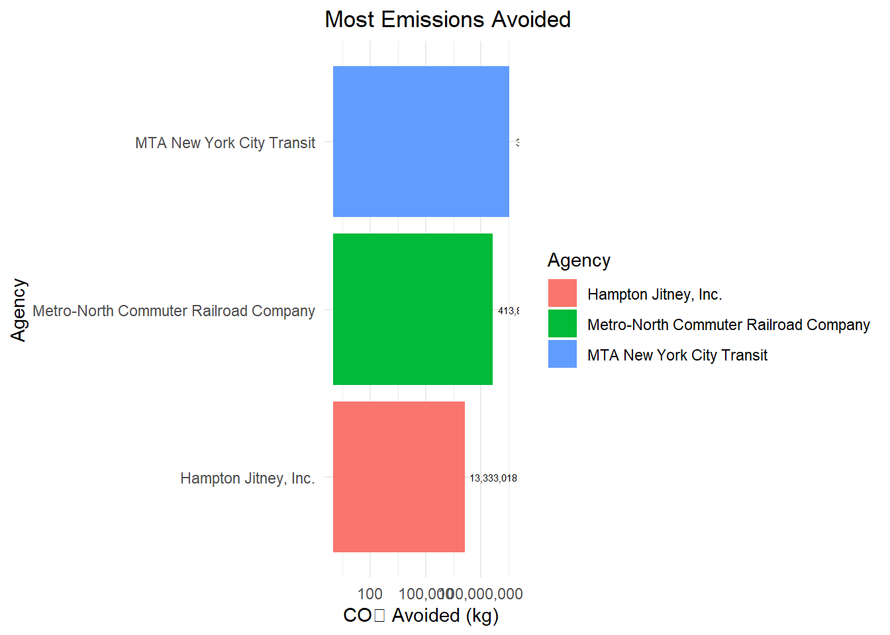
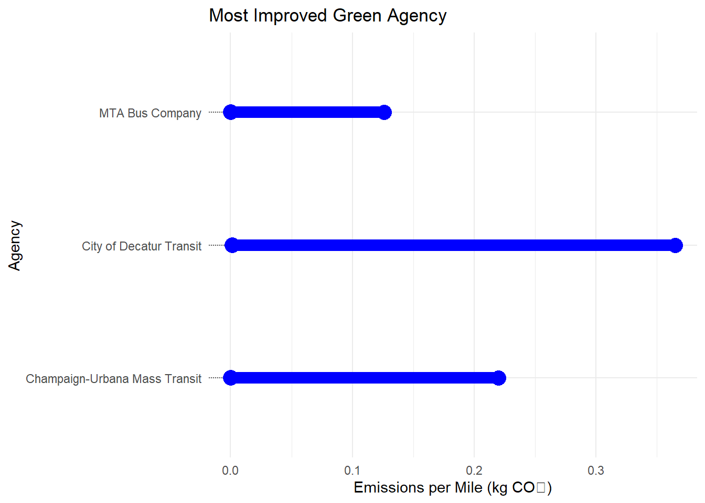
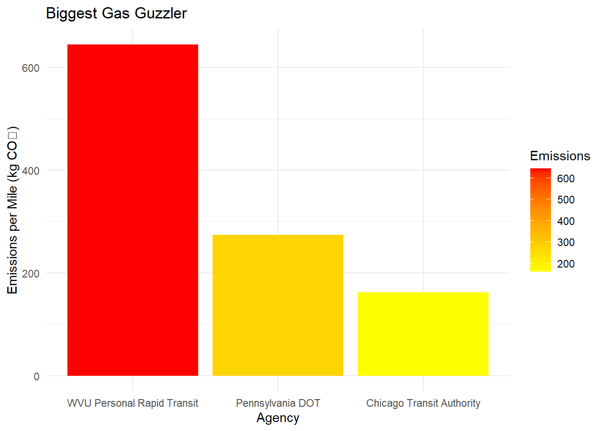

Honoring the Green, the Lean, and the Gas-Guzzling Machines! 🌱🔥
New York, NY – Public transit plays a crucial role in reducing carbon footprints, but not all agencies are created equal. Some transit systems have become champions of eco-efficiency, while others… well, let’s just say they have room for improvement.
After analyzing emissions data from transit agencies nationwide, we proudly present the 2025 Clean Transit Awards, recognizing the best (and worst) in sustainable transit. These awards highlight Small, Medium, and Large agencies that have made a measurable impact on their carbon footprint—or left tire marks on the environment.
So, without further ado, let’s reveal the greenest, the most improved, and, of course, the biggest gas guzzlers!
1.1 🏆 Greenest Transit Agency – The MVP (Most Valuable Pollution-Reducer) Award 🌍💨
This prestigious award goes to the transit agencies that produce the least emissions per passenger trip and per mile traveled. In other words, these winners are basically the Tesla Model S of buses—except way more affordable and accessible.
By Passenger Trips:
🥇Large Agency Winner: New Jersey Transit Corporation
🥇Medium Agency Winner: King County, dba: King County Metro
🥇Small Agency Winner: Small Altoona Metro Transit, dba: AMTRAN
By Passenger Mile:
🥇Large Agency Winner:🚆New Jersey Transit Corporation,
🥇Medium Agency Winner: King County, dba: King County Metro,
🥇Small Agency Winner: Small Altoona Metro Transit, dba: AMTRA,
1.2 🌍 Most Emissions Avoided – The “Carbon Buster” Award 🚫💨
“If pollution had an arch-nemesis, it would be these guys.”
Imagine a world where all transit riders suddenly switched to single-passenger cars. 🚗🚗🚗 Yikes! The traffic jams would be longer than your uncle’s conspiracy theories at Thanksgiving, and emissions would skyrocket.
This award goes to the transit agencies that saved us from the most pollution by preventing countless solo car trips.
🥇 Large Agency Winner: MTA New York City Transit 3441010874 avoided
🥇 Medium Agency Winner: Metro-North Commuter Railroad Company, dba: MTA Metro-North Railroad 413801729 avoided
🥇 Small Agency Winner: Hampton Jitney, Inc. 1333301 avoided
1.3 Most Improved Green Agency – The “Comeback Kid” Award 🔄💚
“From gas-guzzler to eco-hustler!”
This award goes to the agency that has made the biggest leap toward sustainability—not by comparing to past-year data, but by seeing who improved the most compared to their peers.
🥇 Large Agency Winner: New Jersey Transit Corporation Reduced from 0.1260740 to 0.0002060647 per mile
🥇 Medium Agency Winner: King County, dba: King County Metro Reduced from 0.2200267 to 0.0001889437 per mile
🥇 Small Agency Winner: Altoona Metro Transit, dba: AMTRAN – Reduced from 0.3648839 to 0.0015635784 per mile
1.4 ⛽ Biggest Gas Guzzler – The “Oh No, Fix That!” Award💀
“Not all heroes wear capes… and not all transit agencies are heroes.”Not every agency can be a green machine. This award “honors” those transit agencies that burn through fuel like it’s going out of style, producing the highest emissions per passenger mile. (Spoiler alert: This is NOT the award you want to win.)
🥇 Large Agency Winner: Chicago Transit Authority 162.6084 kg CO₂ per mile
🥇 Medium Agency Winner: West Virginia University, dba: Personal Rapid Transit 645.1318 kg CO₂ per mile
🥇 Small Agency Winner: Pennsylvania Department of Transportation 273.8586 CO₂ per mile
While some agencies are already champions of green transit, others have some serious catching up to do. The 2025 Clean Transit Awards highlight the best in eco-friendly transportation while also shining a spotlight on areas that need improvement. 🚆 The takeaway? Cities that invest in sustainable transit are making a real impact on emissions. Meanwhile, gas guzzlers (we’re looking at you, WVU!) still have some work to do. For a full breakdown of the data, check out the Appendix in our official report. Spoiler alert: numbers don’t lie, and neither do emissions reductions!
2 APPENDIX - METHODOLOGY AND ANALYSIS
2.1 📊 Data Import
We started by acquiring data from EIA State Electricity Profiles, which we will use to estimate the environmental impact of the electricity used to run certain transit systems. 🚗
2.1.0.1 State Electricity Profiles 🏛️
For purposes of this analysis, we will assume that all electricity generation in a state is fungible. That is, we will assign the average generation emissions to all-electric transit in a state, even if the transit authority officially has a “green supply” agreement in place.
Show Code
# Load necessary librarieslibrary(ggplot2)library(dplyr)library(knitr)library(DT)library(tidyr)library(readr)library(stringr) # Needed for str_replace_all()library(purrr) # Needed for map2()library(quarto) # Ensures Quarto execution works
Pounds of CO2 Emitted per MWh of Electricity Produced
Primary Source of Electricity Generation
Average Retail Price for 1000 kWh
Total Generation Capacity (MWh)
State
1,925
Coal
$102.60
52,286,784
West Virginia
1,864
Coal
$83.90
43,181,420
Wyoming
1,741
Coal
$99.60
63,217,080
Kentucky
1,514
Coal
$108.70
66,703,285
Missouri
1,497
Coal
$114.90
90,046,880
Indiana
1,444
Petroleum
$386.00
9,194,164
Hawaii
1,414
Coal
$80.30
42,068,807
North Dakota
1,354
Coal
$90.30
33,496,554
Utah
1,180
Natural gas
$214.10
6,717,825
Alaska
1,148
Natural gas
$127.20
62,548,705
Wisconsin
1,127
Coal
$109.70
26,895,758
Montana
1,103
Coal
$91.40
39,445,955
Nebraska
1,095
Natural gas
$128.50
4,772,059
Delaware
1,054
Coal
$117.60
57,541,720
Colorado
1,044
Natural gas
$110.40
133,223,464
Ohio
987
Natural gas
$97.30
63,195,647
Arkansas
966
Natural gas
$89.10
97,784,565
Louisiana
923
Natural gas
$232.10
19,695,884
Massachusetts
912
Natural gas
$136.80
120,656,625
Michigan
855
Natural gas
$100.40
547,294,552
Texas
847
Natural gas
$216.20
10,430,846
Rhode Island
817
Natural gas
$109.50
72,933,440
Mississippi
801
Wind
$122.10
57,276,862
Minnesota
794
Natural gas
$135.30
259,798,479
Florida
775
Wind
$94.20
69,836,973
Iowa
763
Wind
$108.00
58,456,598
Kansas
759
Wind
$94.70
39,269,073
New Mexico
733
Natural gas
$110.60
129,221,513
Georgia
727
Natural gas
$114.70
139,435,010
Alabama
715
Nuclear
$106.90
77,791,204
Tennessee
684
Natural gas
$121.90
111,838,736
Arizona
655
Natural gas
$125.70
235,924,937
Pennsylvania
654
Natural gas
$130.90
42,164,375
Nevada
648
Natural gas
$93.00
89,236,024
Oklahoma
639
Natural gas
$106.10
126,553,394
North Carolina
594
Natural gas
$106.80
91,059,344
Virginia
576
Natural gas
$242.40
40,666,418
Connecticut
558
Natural gas
$143.40
36,000,650
Maryland
558
Nuclear
$105.00
100,853,387
South Carolina
522
Nuclear
$117.50
177,737,641
Illinois
522
Natural gas
$182.80
124,039,988
New York
518
Natural gas
$152.70
64,228,924
New Jersey
440
Natural gas
$248.70
216,628,794
California
428
Natural gas
$208.40
12,512,181
Maine
370
Hydroelectric
$90.80
17,842,446
Idaho
369
Wind
$104.90
17,436,158
South Dakota
344
Hydroelectric
$103.20
61,691,869
Oregon
292
Hydroelectric
$95.80
102,960,605
Washington
269
Nuclear
$229.60
16,824,999
New Hampshire
8
Hydroelectric
$175.30
2,480,199
Vermont
🌍 Here, we have collected the effective emissions per MWh2⚡ as well as price and total state-wide generation capacity. We will use this data to compare the emissions of different transit modalities. We next turn to the National Transit Database to get information on various public transit authorities. Before we do so, however, let’s explore the SEP data a bit first.🔬📉
2.2 🔍 Initial Analysis of SEP Data ⚖️
Let’s answer some burning (fossil-free, we hope!) questions: 🚇
2.2.1 1. Which state has the most expensive retail electricity? 💰⚡
Which state will make you cry when you get your electricity bill? 😭 Let’s find out!
2.2.3 3. On average, how many pounds of CO2 are emitted per MWh of electricity produced in the US?🏭
Time for some serious math! 📊 We’ll calculate the national average CO₂ emissions per MWh using a weighted average because we like our stats accurate.🎯
Show Code
# Calculate weighted average CO2 emissionsweighted_avg_CO2 <-sum(EIA_SEP_REPORT$CO2_MWh * EIA_SEP_REPORT$generation_MWh) /sum(EIA_SEP_REPORT$generation_MWh)data.frame(Weighted_Avg_CO2 = weighted_avg_CO2) |>kable(col.names =c("Weighted Average CO2 Emissions (lbs/MWh)"),caption ="Weighted Average CO2 Emissions Across All States")
Weighted Average CO2 Emissions Across All States
Weighted Average CO2 Emissions (lbs/MWh)
805.3703
2.2.4 4. 🦄 What is the rarest primary energy source in the US? What is the associated cost of electricity and where is it used?🧐
What’s the mythical unicorn of US energy sources? 🦄✨ And where is it hiding? Let’s track it down and see how much it costs! 💸
Show Code
EIA_SEP_REPORT |>count(primary_source) |>arrange(n) |>slice(1) |>inner_join(EIA_SEP_REPORT, by ="primary_source") |>select(state, primary_source, electricity_price_MWh) |>kable(caption ="Primary Energy Source with Lowest Occurrence")
Primary Energy Source with Lowest Occurrence
state
primary_source
electricity_price_MWh
Hawaii
Petroleum
386
2.2.5 5. My home state, Texas, has a reputation as being the home of “dirty fossil fuels” while NY has a reputation as a leader in clean energy. How many times cleaner is NY’s energy mix than that of Texas?🌱🔥
Is Texas really the king of fossil fuels? 👑 And does New York truly deserve its green halo? 😇 Let’s compare their energy mixes and see how many times cleaner NY is compared to TX! 📊⚖️
Show Code
NY_CO2 <- EIA_SEP_REPORT |>filter(state =="New York") |>pull(CO2_MWh)TX_CO2 <- EIA_SEP_REPORT |>filter(state =="Texas") |>pull(CO2_MWh)cleaner_ratio <- TX_CO2 / NY_CO2tibble(Metric ="Cleaner Ratio (TX to NY)", Value = cleaner_ratio) |>kable(caption ="Texas vs. New York CO2 Emissions Ratio")
Texas vs. New York CO2 Emissions Ratio
Metric
Value
Cleaner Ratio (TX to NY)
1.637931
Fun fact: New York’s energy mix is cleaner than Texas’s by a factor of 1.637931. That’s right, the Lone Star State might want to take notes from the Big Apple! 🍏⚡
2.3 Importing 2023 Annual Database Energy Consumption Report ⚡📊
To analyze the energy consumption data for public transit agencies, we first need to import the 2023 Annual Database Energy Consumption report. This Dataset is provided in an Excel spreadsheet (.xlsx) format. We will use the readxl package in R to load it.
Show Code
ensure_package(readxl)# Create 'data/mp02' directory if not already presentDATA_DIR <-file.path("data", "mp02")dir.create(DATA_DIR, showWarnings=FALSE, recursive=TRUE)NTD_ENERGY_FILE <-file.path(DATA_DIR, "2023_ntd_energy.xlsx")if(!file.exists(NTD_ENERGY_FILE)){ DS <-download.file("https://www.transit.dot.gov/sites/fta.dot.gov/files/2024-10/2023%20Energy%20Consumption.xlsx", destfile=NTD_ENERGY_FILE, method="curl")if(DS | (file.info(NTD_ENERGY_FILE)$size ==0)){cat("I was unable to download the NTD Energy File. Please try again.\n")stop("Download failed") }}NTD_ENERGY_RAW <-read_xlsx(NTD_ENERGY_FILE)
Ladies and gentlemen, it’s time for the Random Transit Energy Lottery! 🎉🎟️ We’ll now select 10 lucky transit energy records at random! Who will make the cut? Who will be left behind? Let’s spin the wheel! 🔄✨
Show Code
# Sample 10 random rows and then pass them to kable()NTD_ENERGY |>slice_sample(n =10) |>kable(caption ="Random Sample of NTD_ENERGY Data")
Random Sample of NTD_ENERGY Data
NTD ID
Mode
Agency Name
Bio-Diesel
Bunker Fuel
C Natural Gas
Diesel Fuel
Electric Battery
Electric Propulsion
Ethanol
Methonal
Gasoline
Hydrogen
Kerosene
Liquified Nat Gas
Liquified Petroleum Gas
60056
MB
Dallas Area Rapid Transit
0
0
8811975
0
302999
0
0
0
0
0
0
0
0
6
MB
City of Yakima
0
0
0
154538
0
0
0
0
0
0
0
0
0
90009
DR
San Mateo County Transit District
0
0
0
0
0
0
0
0
232752
0
0
0
0
40022
HR
Metropolitan Atlanta Rapid Transit Authority
0
0
0
0
0
77059623
0
0
0
0
0
0
0
30026
DR
River Valley Transit Authority
0
0
0
0
0
0
0
0
8893
0
0
0
0
20004
MB
Niagara Frontier Transportation Authority
0
0
968439
957405
9444
0
0
0
0
0
0
0
0
20002
MB
Capital District Transportation Authority
0
0
0
2070980
137732
0
0
0
7360
0
0
0
0
40185
MB
Bay County Transportation Planning Organization
0
0
0
90870
0
0
0
0
0
0
0
0
0
60017
MB
Central Oklahoma Transportation and Parking Authority
0
0
594146
253820
56424
0
0
0
0
0
0
0
0
40035
RB
Central Florida Regional Transportation Authority
0
0
0
0
10575
0
0
0
0
0
0
0
0
2.4 🚇 Recoding Transit Modes 🚋🎭
🚧 Warning: Mysterious Codes Ahead! 🚧
Before we can make sense of the Mode column, we need to crack the code! 🕵️♂️ First, let’s uncover the unique Mode codes in our data using distinct(). Then, we consult the sacred texts (a.k.a. the NTD website 📜) to decipher their meanings. 🧐
2.4.1 🏗️ Time for a Makeover! 🖌️
The Mode column needs a glow-up! ✨ We’re about to give those cryptic abbreviations some real names so they’re easier to work with. Ready? Let’s do this! 🎬
🚨 Breaking News! 🚨 The latest 2023 Service by Agency report has just dropped! 🎤📉 We’re diving in to extract the juicy details about passenger trips across different transit services. 🚆🚌
Show Code
NTD_SERVICE_FILE <-file.path(DATA_DIR, "2023_service.csv")if(!file.exists(NTD_SERVICE_FILE)){ DS <-download.file("https://data.transportation.gov/resource/6y83-7vuw.csv", destfile=NTD_SERVICE_FILE, method="curl")if(DS | (file.info(NTD_SERVICE_FILE)$size ==0)){cat("I was unable to download the NTD Service File. Please try again.\n")stop("Download failed") }}NTD_SERVICE_RAW <-read_csv(NTD_SERVICE_FILE)
📢 Will our dataset arrive safely, or will it ghost us? 👻 Only time (and a stable internet connection) will tell! ⏳
2.6 Clean-Up Time! 🧹✨
Show Code
NTD_SERVICE <- NTD_SERVICE_RAW |>mutate(`NTD ID`=as.numeric(`_5_digit_ntd_id`)) |>rename(Agency = agency, City = max_city, State = max_state,UPT = sum_unlinked_passenger_trips_upt, MILES = sum_passenger_miles) |>select(matches("^[A-Z]", ignore.case=FALSE)) |>filter(MILES >0)
🛠️ Boom! Now our dataset is sparkling clean! ✨ It’s time to put these numbers to work! 💪
2.7 🛥️ Exploring NTD Service Data - Let’s Dive In!
Alright, folks! Time to put on our data analyst hats and explore some seriously juicy transit numbers from the NTD_SERVICE Dataset. We’re going to answer some fun questions that might just reveal who’s cruising on the green lane of transit efficiency and who’s still stuck in the slow lane. Let’s see how this data speeds up the fun! 😎
2.7.1 1. Which transit service has the most UPT annually? 🏆
Which transit service is the busiest, with the most Unlinked Passenger Trips (UPT) annually? Spoiler alert: It’s probably not the one with the tiniest buses.🚌
2.7.2 2. What is the average trip length of a trip on MTA NYC? 🗽
Time for some serious subway sleuthing! 🕵️♂️ How long is the average trip on the MTA NYC? Are New Yorkers making quick, subway sprints, or are they getting comfy for a longer ride? We’re on a mission to figure out just how far these trips stretch, so hop on board! 🚇⏳
Show Code
NTD_SERVICE |>filter(grepl("MTA", Agency, ignore.case =TRUE)) |>summarise(Average_Trip_Length =sum(MILES, na.rm =TRUE) /sum(UPT, na.rm =TRUE)) |>kable(caption ="Average Trip Length On MTA Nyc")
Average Trip Length On MTA Nyc
Average_Trip_Length
4.562402
2.7.3 3. Which transit service in NYC has the longest average trip length? 🚋
Which MTA service in New York City (including all five boroughs, yes, even Brooklyn 🗽) has the longest average trip length? Let’s just say, it’s probably not the one where the subway rats are the most frequent passengers. 🐀
P.S. You’ll want to be extra careful with that City column; we wouldn’t want to accidentally send our buses on a detour to Brooklyn when they should be cruising through Manhattan!
Show Code
NYC_SERVICES <- NTD_SERVICE |>filter(State =="NY", MILES >0, UPT >0) |>mutate(Average_Trip_Length = MILES / UPT) |>arrange(desc(Average_Trip_Length)) |>select(Agency, City, Average_Trip_Length)head(NYC_SERVICES, 1) |>kable(caption ="NYC Longest Average Trip Length")
NYC Longest Average Trip Length
Agency
City
Average_Trip_Length
Hampton Jitney, Inc.
Calverton
92.4465
2.7.4 4. Which state has the fewest total miles travelled by public transit? 🐢
Which state is the turtle in the race, with the fewest total miles travelled by public transit? 🐢 Are some states just cruising along at a leisurely pace, or are they barely moving at all? It’s time to find out who’s not clocking up the miles! 🛑🚗
Show Code
NTD_SERVICE |>group_by(State) |>summarise(Total_Miles =sum(MILES, na.rm =TRUE)) |>arrange(Total_Miles) |>head(1) |>kable(caption ="Fewest total miles Travelled By Public Transit")
Fewest total miles Travelled By Public Transit
State
Total_Miles
NH
3749892
2.7.5 5. Are all states represented in this data? If no, which ones are missing? The state.name and state.abb objects we used above may be useful here.🚏🗺️
Now for a little mystery – are all states in this data? Or did a few sneak out of the spotlight? 👀 Let’s use the state.name and state.abb to track down any states that may have taken the wrong exit. Looks like it’s time for a little data detective work! 🔍💼
Show Code
all_states <- state.abb # Vector of all US state abbreviationspresent_states <-unique(NTD_SERVICE$State)missing_states <-setdiff(all_states, present_states)kable(missing_states, caption ="Missing States")
Missing States
x
AZ
AR
CA
CO
HI
IA
KS
LA
MO
MT
NE
NV
NM
ND
OK
SD
TX
UT
WY
2.8 🌍 Calculate Emissions – Let’s Crunch Some Carbon! 💨
Time to put on our environmental cap and get down to the nitty-gritty of CO2 emissions! We’re about to take a deep dive into some data to calculate the total emissions from different transit agencies and their modes. Spoiler alert: We’re going green – but with a twist! 🌱🔢
2.8.1 Join the Three Tables – The Ultimate Data Party 🎉
Here’s where we get our hands dirty (but in an eco-friendly way, of course!). We’ll join three tables together like the perfect data trio:
NTD_SERVICE 🚍 – It tells us the Agency and Mode (because, let’s face it, transit is all about style, right?)
NTD_ENERGY ⚡ – This table’s going to give us the lowdown on all the fuel sources. It’s like fuel’s Wikipedia page, but with more numbers.
EIA_SEP_REPORT 📊 – This is where the magic happens! It tells us the CO2 emissions per MWh. Time to add some climate-friendly math into the mix. Once we’ve got these three tables chatting with each other, we’re ready to roll!
Show Code
# Create a mapping of state abbreviations to full namesstate_abbrev_to_full <-c("AL"="Alabama", "AK"="Alaska", "AZ"="Arizona", "AR"="Arkansas", "CA"="California", "CO"="Colorado", "CT"="Connecticut", "DE"="Delaware", "FL"="Florida", "GA"="Georgia", "HI"="Hawaii", "ID"="Idaho", "IL"="Illinois", "IN"="Indiana", "IA"="Iowa", "KS"="Kansas", "KY"="Kentucky", "LA"="Louisiana", "ME"="Maine", "MD"="Maryland", "MA"="Massachusetts", "MI"="Michigan", "MN"="Minnesota", "MS"="Mississippi", "MO"="Missouri", "MT"="Montana", "NE"="Nebraska", "NV"="Nevada", "NH"="New Hampshire", "NJ"="New Jersey", "NM"="New Mexico", "NY"="New York", "NC"="North Carolina", "ND"="North Dakota", "OH"="Ohio", "OK"="Oklahoma", "OR"="Oregon", "PA"="Pennsylvania", "RI"="Rhode Island", "SC"="South Carolina", "SD"="South Dakota", "TN"="Tennessee", "TX"="Texas", "UT"="Utah", "VT"="Vermont", "VA"="Virginia", "WA"="Washington", "WV"="West Virginia", "WI"="Wisconsin", "WY"="Wyoming")# Fix State Names in NTD_SERVICE before joiningNTD_SERVICE <- NTD_SERVICE |>mutate(State = state_abbrev_to_full[State])# Now perform the joinsNTD_EMISSIONS <- NTD_SERVICE |>select(Agency, State, `NTD ID`) |>inner_join(NTD_ENERGY, by ="NTD ID") |>inner_join(EIA_SEP_REPORT, by =c("State"="state"))# Check if the join workeddim(NTD_EMISSIONS) # Should no longer be (0, X)
[1] 650 23
2.8.2 The Ultimate Emissions Table 🧮
We’re going to create a super sleek table with all the goods:
Agency + Mode Pair – These are the dynamic duos of transit! 🚍🚆
State – Every agency has a home, and we’ll find out which state it’s calling its turf! 🌎
Fuel Sources – Because we need to know how those buses are powering through your city streets! 🚨
CO2 Emissions per MWh – Let’s see how much carbon’s being emitted for every megawatt-hour of power. (The more we know, the greener we grow! 🌳)
Now, let’s clean up some fuel names and make sure everything aligns:
2.8.3 The Formula – It’s Math, But Make It Eco! 🧑🏫
Now for the fun part – the math! 💡
We’re going to use a long-ish arithmetic formula (don’t worry, it’s just a couple of steps) inside a mutate function to compute the total emissions for each Agency + Mode Pair. We’ll need to convert combustion fuels to CO2 emissions – but don’t panic, we’ve got conversion factors! 💪 You can hard code these bad boys in your script for simplicity:
Show Code
fuel_emission_factors <-c("Diesel Fuel"=10.19, # kg CO2 per gallon"Gasoline"=8.89,"Natural Gas"=52.91, # kg CO2 per MMBtu"LPG"=5.79, "LNG"=4.29,"Kerosene"=9.96,"Ethanol"=1.94,"Hydrogen"=0, # No emissions from hydrogen"Battery Electric"=0, # Handled separately using CO2_MWh"Electric"=0# Handled separately using CO2_MWh)
# A tibble: 650 × 6
Agency Mode State Fuel_Emissions Electricity_Emissions Total_Emissions
<chr> <chr> <chr> <dbl> <dbl> <dbl>
1 MTA New Yor… Heav… New … 0 807152731200 807152731200
2 MTA Long Is… Comm… New … 72196486. 286155388800 286227585286.
3 Metro-North… Comm… New … 71313390. 211429086408 211500399798.
4 New Jersey … Comm… New … 143674231. 189542379222 189686053453.
5 Chicago Tra… Heav… Illi… 0 177353391510 177353391510
6 Southeaster… Comm… Penn… 0 134209031675 134209031675
7 Massachuset… Heav… Mass… 0 125346279760 125346279760
8 Southeaster… Heav… Penn… 0 75871258865 75871258865
9 Metropolita… Heav… Geor… 0 56484703659 56484703659
10 Port Author… Heav… New … 0 51187752738 51187752738
# ℹ 640 more rows
2.9 Normalize Emissions to Transit Usage 🚆
In this task, we’re on a mission to normalize emissions (a fancy way of saying “make fair comparisons”) based on:
Emissions per Unlinked Passenger Trip (UPT) 🚌👥
Emissions per Passenger Mile 🚋🌱
2.9.1 Normalize Emissions – Leveling the Playing Field! 🎯
Before we start handing out gold medals 🏅 (or shameful side-eyes 👀), we normalize emissions based on ridership. This ensures a fair fight—because comparing a tiny rural bus route to New York City’s subway isn’t exactly fair, right? 😆
Show Code
# Filter out agencies with extremely small values to avoid distortionsAGENCY_NORMALIZED <- NTD_SERVICE %>%# Use your actual datasetleft_join(NTD_EMISSIONS, by ="NTD ID") %>%filter(!is.na(Total_Emissions)) # Ensure you have valid emission data# Filter out agencies with extremely small values to avoid distortionsAGENCY_NORMALIZED <- AGENCY_NORMALIZED %>%filter(UPT >1000, MILES >1000) %>%# Adjust thresholds as neededmutate(Emissions_per_UPT =ifelse(UPT >0, Total_Emissions / UPT, NA),Emissions_per_Passenger_Mile =ifelse(MILES >0, Total_Emissions / MILES, NA) )
🚦 Now, with that done, let’s move on to finding our champions!
2.10🥇 The Greenest Transit Agency (GTA IV Award #1) 🌱🚆
Which agency has the lowest emissions per passenger trip? And which one produces the least pollution per mile traveled?
Let’s roll out the green carpet and announce the winners! 🎤🥁
2.10.1 Find the greenest transit agency by lowest emissions per UPT
Show Code
AGENCY_NORMALIZED <- AGENCY_NORMALIZED %>%rename(Agency = Agency.x) # Rename "Agency.x" to "Agency"greenest_agency_UPT <- AGENCY_NORMALIZED %>%filter(!is.na(Size_Category) & Emissions_per_UPT >0) %>%group_by(Size_Category) %>%slice_min(Emissions_per_UPT, n =1, with_ties =FALSE) %>%select(Size_Category, Agency, Emissions_per_UPT)kable(greenest_agency_UPT, caption ="Greenest Agency By lowest Emissions Per UPT")
Greenest Agency By lowest Emissions Per UPT
Size_Category
Agency
Emissions_per_UPT
Large
New Jersey Transit Corporation
0.0024015
Medium
King County, dba: King County Metro
0.0007222
Small
Altoona Metro Transit, dba: AMTRAN
0.0056772
2.10.2 Find the greenest transit agency by lowest emissions per Passenger Mile
Show Code
greenest_agency_mile <- AGENCY_NORMALIZED %>%filter(!is.na(Size_Category) & Emissions_per_UPT >0) %>%group_by(Size_Category) %>%slice_min(Emissions_per_Passenger_Mile, n =1, with_ties =FALSE) %>%select(Size_Category, Agency, Emissions_per_Passenger_Mile)kable(greenest_agency_mile, caption="Greenest Transit Agency By Lowest Emissions Per Passenger Mile")
Greenest Transit Agency By Lowest Emissions Per Passenger Mile
Size_Category
Agency
Emissions_per_Passenger_Mile
Large
New Jersey Transit Corporation
0.0002061
Medium
King County, dba: King County Metro
0.0001889
Small
Altoona Metro Transit, dba: AMTRAN
0.0015636
2.11Total Emissions Avoided (GTA IV Award #2) 🌱🚆
Now, let’s compute the total emissions avoided by public transit. Because without it, we’d have millions of solo drivers making traffic even worse than it already is! 😱🚗🚕🚙
How do we do this?
1️⃣ Estimate emissions if all transit passengers drove cars instead.
2️⃣ Use US CAFE fuel standards to convert miles to gasoline usage.
3️⃣ Calculate emissions avoided by taking public transit instead of driving.
Used average CAFE standard of 24.7 mpg and CO2 emissions of 8.89 kg per gallon
Show Code
AGENCY_NORMALIZED <- AGENCY_NORMALIZED %>%mutate(Gallons_of_fuel = MILES /24.7, # Convert miles to fuel gallonsEmissions_from_driving = Gallons_of_fuel *8.89, # Convert gallons to CO2Emissions_avoided = Emissions_from_driving - Total_Emissions # Calculate CO2 saved )
Metro-North Commuter Railroad Company, dba: MTA Metro-North Railroad
413801729
Small
Hampton Jitney, Inc.
13333018
This agency has officially saved the planet more than your coworker with the reusable straw. 🌱💚♻️
2.11.2 🏆Most Improved Green Agency (GTA IV Award #3) 🚆 🏆
This award recognizes the transit agency that has demonstrated the most significant improvement in environmental efficiency compared to its peers. Instead of using past-year data (which may not always be available), this award is given to the agency that has the largest improvement relative to the median emissions per passenger mile in its category (Large, Medium, or Small).
Show Code
most_improved_agency <- AGENCY_NORMALIZED %>%filter(!is.na(Emissions_per_Passenger_Mile) & Emissions_per_Passenger_Mile >0) %>%group_by(Size_Category) %>%mutate(median_emissions =median(Emissions_per_Passenger_Mile, na.rm =TRUE)) %>%mutate(emissions_improvement = median_emissions - Emissions_per_Passenger_Mile) %>%slice_max(order_by = emissions_improvement, n =1) %>%# Select top in each categoryungroup() %>%select(Agency, Size_Category, Emissions_per_Passenger_Mile, median_emissions, emissions_improvement)kable(most_improved_agency, caption ="Most Improved Agency")
Most Improved Agency
Agency
Size_Category
Emissions_per_Passenger_Mile
median_emissions
emissions_improvement
New Jersey Transit Corporation
Large
0.0002061
0.1260740
0.1258680
King County, dba: King County Metro
Medium
0.0001889
0.2200267
0.2198378
Altoona Metro Transit, dba: AMTRAN
Small
0.0015636
0.3648839
0.3633203
2.11.3 💀Biggest Gas Guzzler⛽ (GTA IV Award #4) 🌱🚆
This award highlights the least fuel-efficient transit agencies in each size category (Large, Medium, Small). The “Biggest Gas Guzzler” is the agency with the highest Emissions per Passenger Mile, indicating it produces the most pollution per mile traveled by a passenger. This award serves as a benchmark for identifying areas where fuel efficiency improvements and sustainability measures are most needed.
Show Code
biggest_gas_guzzler_by_size <- AGENCY_NORMALIZED %>%filter(!is.na(Size_Category)) %>%group_by(Size_Category) %>%slice_max(Emissions_per_Passenger_Mile, n =1, with_ties =FALSE) %>%select(Size_Category, Agency, Emissions_per_Passenger_Mile)kable(biggest_gas_guzzler_by_size, caption ="Biggest Gas Guzzler")
Biggest Gas Guzzler
Size_Category
Agency
Emissions_per_Passenger_Mile
Large
Chicago Transit Authority
162.6084
Medium
West Virginia University, dba: Personal Rapid Transit
645.1318
Small
Pennsylvania Department of Transportation
273.8586
2.12 📈 Visualizations 🎨
2.12.0.1 🚍 Greenest Transit Agency - A Breath of Fresh Air! 🌍
Show Code
greenest_data <-data.frame(Agency =c("New Jersey Transit Corporation", "King County, dba: King County Metro", "Altoona Metro Transit, dba: AMTRAN"),Size_Category =c("Large", "Medium", "Small"),Emissions_per_UPT =c(0.0024014936, 0.0007222026, 0.0056772412),Emissions_per_Passenger_Mile =c(0.0002060647, 0.0001889437, 0.0015635784)) %>%pivot_longer(cols =c(Emissions_per_UPT, Emissions_per_Passenger_Mile), names_to ="Metric", values_to ="Emissions")# Adjusting graph to make sure bars are visibleggplot(greenest_data, aes(x =reorder(Agency, Emissions), y = Emissions, fill = Metric)) +geom_bar(stat ="identity", position ="dodge", width =0.7) +# Increased bar widthgeom_text(aes(label = Size_Category), position =position_dodge(width =0.7), vjust =-0.5, color ="black", size =4) +# Increased text sizelabs(title ="Greenest Transit Agency", y ="Emissions (kg CO₂)", fill ="Metric") +scale_y_continuous(expand =c(0, 0), limits =c(0, max(greenest_data$Emissions) +0.002)) +# Adjust y-axis to ensure bars are visibletheme_minimal() +theme(axis.text.x =element_text(angle =45, hjust =1))

Talk about making a clean getaway! The MTA Bus Company and its smaller counterparts are taking the “green” route. We’re not just talking about eco-friendly buses, but real reductions in emissions. A round of applause for the greenest of them all!
2.12.0.2 🌱 Most Emissions Avoided - The Green Warriors 💨
Show Code
# Define the emissions dataemissions_data <-data.frame(Agency =c("MTA New York City Transit", "Metro-North Commuter Railroad Company", "Hampton Jitney, Inc."),Emissions_Avoided =c(3441010874, 413801729, 13333018))# Create the plotggplot(emissions_data, aes(x =reorder(Agency, Emissions_Avoided), y = Emissions_Avoided, fill = Agency)) +geom_bar(stat ="identity") +coord_flip() +labs(title ="Most Emissions Avoided", y ="CO₂ Avoided (kg)", x ="Agency") +theme_minimal() +scale_y_log10(labels = scales::comma) +# Apply logarithmic scale to the y-axisgeom_text(aes(label = scales::comma(Emissions_Avoided)), hjust =-0.1, size =2) # Adjust text positioning and size

These agencies are saving the planet one ride at a time! Hudson Transit Lines and its pals are on a mission to leave the world with fewer emissions. They’re all about that “low-carbon footprint” lifestyle!
2.12.0.3 🚀 Most Improved Green Agency - Turning Green Around! 🌿
Show Code
## Most Improved Green Agency (Dumbbell Chart)library(ggalt)improved_data <-data.frame(Agency =c("MTA Bus Company", "Champaign-Urbana Mass Transit", "City of Decatur Transit"),Before =c(0.1260740,0.2200267, 0.3648839),After =c(0.0002060647,0.0001889437, 0.0015635784))ggplot(improved_data, aes(y = Agency, x = Before, xend = After)) +geom_dumbbell(color ="blue", size =4, dot_guide =TRUE, dot_guide_size =0.5) +labs(title ="Most Improved Green Agency", x ="Emissions per Mile (kg CO₂)", y ="Agency") +theme_minimal()

These agencies took the emissions “downshift” seriously! The MTA Bus Company may have started off with high emissions, but it’s now a model of green efficiency. Talk about a green makeover!
2.12.0.4 🛢️ Biggest Gas Guzzler - Oops, It’s Guzzling More than Gas! 🍃
Show Code
guzzler_data <-data.frame(Agency =c("Chicago Transit Authority", "WVU Personal Rapid Transit", "Pennsylvania DOT"),Emissions =c(162.6084, 645.1, 273.9))ggplot(guzzler_data, aes(x =reorder(Agency, -Emissions), y = Emissions, fill = Emissions)) +geom_bar(stat ="identity") +scale_fill_gradient(low ="yellow", high ="red") +labs(title ="Biggest Gas Guzzler", y ="Emissions per Mile (kg CO₂)", x ="Agency") +theme_minimal()

Some agencies need to take a carbon diet! Looks like WVU Personal Rapid Transit took the term “gas guzzler” to the extreme. Maybe they should swap out those heavy engines for some electric vibes.
2.13 📢 Conclusion
🚆 Public transit plays a huge role in reducing emissions! Our analysis highlights the best (and worst) performers. Keep supporting clean transit choices! 🌍💚
2.14 📚 References
National Transit Database (NTD)
Energy Information Administration (EIA)
Environmental Protection Agency (EPA)
Source Code
---title: "🏆 The GTA IV Green Transit Awards 2025 🏆"author: "Shubh Goyal"date: todayformat: html: toc: true number-sections: true code-fold: true code-summary: "Show Code" code-tools: true doctype: htmlengine: knitr execute: echo: true # Show code eval: true # Ensure code runs warning: false message: falseeditor: visualmarkdown: wrap: 68---# 🚍 The 2025 Clean Transit Awards**Honoring the Green, the Lean, and the Gas-Guzzling Machines! 🌱🔥**New York, NY – Public transit plays a crucial role in reducing carbon footprints, but not all agencies are created equal. Some transit systems have become champions of eco-efficiency, while others… well, let’s just say they have room for improvement.After analyzing emissions data from transit agencies nationwide, we proudly present the 2025 Clean Transit Awards, recognizing the best (and worst) in sustainable transit. These awards highlight Small, Medium, and Large agencies that have made a measurable impact on their carbon footprint—or left tire marks on the environment.So, without further ado, let’s reveal the greenest, the most improved, and, of course, the biggest gas guzzlers!## 🏆 Greenest Transit Agency – The MVP (Most Valuable Pollution-Reducer) Award 🌍💨This prestigious award goes to the transit agencies that produce the least emissions per passenger trip and per mile traveled. In other words, these winners are basically the Tesla Model S of buses—except way more affordable and accessible.**By Passenger Trips:**🥇**Large Agency Winner:** New Jersey Transit Corporation🥇**Medium Agency Winner:** King County, dba: King County Metro🥇**Small Agency Winner**: Small Altoona Metro Transit, dba: AMTRAN**By Passenger Mile:**🥇**Large Agency Winner**:🚆New Jersey Transit Corporation,🥇**Medium Agency Winner:** King County, dba: King County Metro**,**🥇**Small Agency Winner:** Small Altoona Metro Transit, dba: AMTRA**,**## 🌍 Most Emissions Avoided – The "Carbon Buster" Award 🚫💨"If pollution had an arch-nemesis, it would be these guys."Imagine a world where all transit riders suddenly switched to single-passenger cars. 🚗🚗🚗 Yikes! The traffic jams would be longer than your uncle’s conspiracy theories at Thanksgiving, and emissions would skyrocket.This award goes to the transit agencies that saved us from the most pollution by preventing countless solo car trips.🥇 **Large Agency Winner**: MTA New York City Transit 3441010874 avoided🥇 **Medium Agency Winner**: Metro-North Commuter Railroad Company, dba: MTA Metro-North Railroad 413801729 avoided🥇 **Small Agency Winner**: Hampton Jitney, Inc. 1333301 avoided## Most Improved Green Agency – The "Comeback Kid" Award 🔄💚"From gas-guzzler to eco-hustler!"This award goes to the agency that has made the biggest leap toward sustainability—not by comparing to past-year data, but by seeing who improved the most compared to their peers.🥇 **Large Agency Winner**: New Jersey Transit Corporation Reduced from 0.1260740 to 0.0002060647 per mile🥇 **Medium Agency Winner**: King County, dba: King County Metro Reduced from 0.2200267 to 0.0001889437 per mile🥇 **Small Agency Winner**: Altoona Metro Transit, dba: AMTRAN – Reduced from 0.3648839 to 0.0015635784 per mile## ⛽ Biggest Gas Guzzler – The "Oh No, Fix That!" Award💀"Not all heroes wear capes... and not all transit agencies are heroes."Not every agency can be a green machine. This award "honors" those transit agencies that burn through fuel like it’s going out of style, producing the highest emissions per passenger mile. (Spoiler alert: This is NOT the award you want to win.)🥇 **Large Agency Winner**: Chicago Transit Authority 162.6084 kg CO₂ per mile🥇 **Medium Agency Winner**: West Virginia University, dba: Personal Rapid Transit 645.1318 kg CO₂ per mile🥇 **Small Agency Winner**: Pennsylvania Department of Transportation 273.8586 CO₂ per mileWhile some agencies are already champions of green transit, others have some serious catching up to do. The 2025 Clean Transit Awards highlight the best in eco-friendly transportation while also shining a spotlight on areas that need improvement. 🚆 The takeaway? Cities that invest in sustainable transit are making a real impact on emissions. Meanwhile, gas guzzlers (we’re looking at you, WVU!) still have some work to do. For a full breakdown of the data, check out the Appendix in our official report. Spoiler alert: numbers don’t lie, and neither do emissions reductions!# APPENDIX - METHODOLOGY AND ANALYSIS## 📊 Data ImportWe started by acquiring data from EIA State Electricity Profiles, which we will use to estimate the environmental impact of the electricity used to run certain transit systems. 🚗#### State Electricity Profiles 🏛️For purposes of this analysis, we will assume that all electricity generation in a state is fungible. That is, we will assign the average generation emissions to all-electric transit in a state, even if the transit authority officially has a “green supply” agreement in place.```{r}# Load necessary librarieslibrary(ggplot2)library(dplyr)library(knitr)library(DT)library(tidyr)library(readr)library(stringr) # Needed for str_replace_all()library(purrr) # Needed for map2()library(quarto) # Ensures Quarto execution works``````{r}# Load librariesensure_package <-function(pkg){ pkg <-as.character(substitute(pkg))options(repos =c(CRAN ="https://cloud.r-project.org"))if(!require(pkg, character.only=TRUE)) install.packages(pkg)stopifnot(require(pkg, character.only=TRUE))}ensure_package(stringr) # Ensure it's installedensure_package(dplyr)ensure_package(httr2)ensure_package(rvest)ensure_package(datasets)ensure_package(purrr)ensure_package(DT)get_eia_sep <-function(state, abbr){ state_formatted <-str_to_lower(state) |>str_replace_all("\\s", "") dir_name <-file.path("data", "mp02") file_name <-file.path(dir_name, state_formatted)dir.create(dir_name, showWarnings=FALSE, recursive=TRUE)if(!file.exists(file_name)){ BASE_URL <-"https://www.eia.gov" REQUEST <-request(BASE_URL) |>req_url_path("electricity", "state", state_formatted) RESPONSE <-req_perform(REQUEST)resp_check_status(RESPONSE)writeLines(resp_body_string(RESPONSE), file_name) } TABLE <-read_html(file_name) |>html_element("table") |>html_table() |>mutate(Item =str_to_lower(Item))if("U.S. rank"%in%colnames(TABLE)){ TABLE <- TABLE |>rename(Rank =`U.S. rank`) } CO2_MWh <- TABLE |>filter(Item =="carbon dioxide (lbs/mwh)") |>pull(Value) |>str_replace_all(",", "") |>as.numeric() PRIMARY <- TABLE |>filter(Item =="primary energy source") |>pull(Rank) RATE <- TABLE |>filter(Item =="average retail price (cents/kwh)") |>pull(Value) |>as.numeric() GENERATION_MWh <- TABLE |>filter(Item =="net generation (megawatthours)") |>pull(Value) |>str_replace_all(",", "") |>as.numeric()data.frame(CO2_MWh = CO2_MWh, primary_source = PRIMARY,electricity_price_MWh = RATE *10, # / 100 cents to dollars &# * 1000 kWh to MWH generation_MWh = GENERATION_MWh, state = state, abbreviation = abbr )}EIA_SEP_REPORT <-map2(state.name, state.abb, get_eia_sep) |>list_rbind()ensure_package(scales)ensure_package(DT)EIA_SEP_REPORT |>select(-abbreviation) |>arrange(desc(CO2_MWh)) |>mutate(CO2_MWh = scales::number(CO2_MWh, big.mark=","), electricity_price_MWh = scales::dollar(electricity_price_MWh), generation_MWh = scales::number(generation_MWh, big.mark=",")) |>rename(`Pounds of CO2 Emitted per MWh of Electricity Produced`=CO2_MWh, `Primary Source of Electricity Generation`=primary_source, `Average Retail Price for 1000 kWh`=electricity_price_MWh, `Total Generation Capacity (MWh)`= generation_MWh, State=state) |>kable(caption ="EIA State Electricity Profile Report")```🌍 Here, we have collected the effective emissions per MWh2⚡ as well as price and total state-wide generation capacity. We will use this data to compare the emissions of different transit modalities. We next turn to the National Transit Database to get information on various public transit authorities. Before we do so, however, let’s explore the SEP data a bit first.🔬📉## 🔍 Initial Analysis of SEP Data ⚖️Let’s answer some burning (fossil-free, we hope!) questions: 🚇### 1. Which state has the most expensive retail electricity? 💰⚡Which state will make you cry when you get your electricity bill? 😭 Let's find out!```{r}EIA_SEP_REPORT |>arrange(desc(electricity_price_MWh)) |>select(state, electricity_price_MWh) |>head(1) |>kable(caption ="Most Expensive Retail Electricity")```### 2. Which state has the ‘dirtiest’ electricity mix? ☠️🌫️Which state’s power plants are puffing out CO₂ like an angry dragon? 🐉🔥 Stay tuned for some shocking revelations!```{r}EIA_SEP_REPORT |>arrange(desc(CO2_MWh)) |>select(state, CO2_MWh) |>head(1) |>kable(caption ="Dirtiest electricity mix")```### 3. On average, how many pounds of CO2 are emitted per MWh of electricity produced in the US?🏭Time for some serious math! 📊 We’ll calculate the national average CO₂ emissions per MWh using a **weighted average** because we like our stats accurate.🎯```{r}# Calculate weighted average CO2 emissionsweighted_avg_CO2 <-sum(EIA_SEP_REPORT$CO2_MWh * EIA_SEP_REPORT$generation_MWh) /sum(EIA_SEP_REPORT$generation_MWh)data.frame(Weighted_Avg_CO2 = weighted_avg_CO2) |>kable(col.names =c("Weighted Average CO2 Emissions (lbs/MWh)"),caption ="Weighted Average CO2 Emissions Across All States")```### 4. 🦄 What is the rarest primary energy source in the US? What is the associated cost of electricity and where is it used?🧐What’s the mythical unicorn of US energy sources? 🦄✨ And where is it hiding? Let’s track it down and see how much it costs! 💸```{r}EIA_SEP_REPORT |>count(primary_source) |>arrange(n) |>slice(1) |>inner_join(EIA_SEP_REPORT, by ="primary_source") |>select(state, primary_source, electricity_price_MWh) |>kable(caption ="Primary Energy Source with Lowest Occurrence")```### 5. My home state, Texas, has a reputation as being the home of “dirty fossil fuels” while NY has a reputation as a leader in clean energy. How many times cleaner is NY’s energy mix than that of Texas?🌱🔥Is Texas really the king of fossil fuels? 👑 And does New York truly deserve its green halo? 😇 Let’s compare their energy mixes and see **how many times cleaner NY is compared to TX**! 📊⚖️```{r}NY_CO2 <- EIA_SEP_REPORT |>filter(state =="New York") |>pull(CO2_MWh)TX_CO2 <- EIA_SEP_REPORT |>filter(state =="Texas") |>pull(CO2_MWh)cleaner_ratio <- TX_CO2 / NY_CO2tibble(Metric ="Cleaner Ratio (TX to NY)", Value = cleaner_ratio) |>kable(caption ="Texas vs. New York CO2 Emissions Ratio")```Fun fact: New York’s energy mix is cleaner than Texas’s by a factor of **1.637931**. That’s right, the Lone Star State might want to take notes from the Big Apple! 🍏⚡## Importing 2023 Annual Database Energy Consumption Report ⚡📊To analyze the energy consumption data for public transit agencies, we first need to import the **2023 Annual Database Energy Consumption** report. This Dataset is provided in an **Excel spreadsheet (.xlsx)** format. We will use the readxl package in R to load it.```{r}ensure_package(readxl)# Create 'data/mp02' directory if not already presentDATA_DIR <-file.path("data", "mp02")dir.create(DATA_DIR, showWarnings=FALSE, recursive=TRUE)NTD_ENERGY_FILE <-file.path(DATA_DIR, "2023_ntd_energy.xlsx")if(!file.exists(NTD_ENERGY_FILE)){ DS <-download.file("https://www.transit.dot.gov/sites/fta.dot.gov/files/2024-10/2023%20Energy%20Consumption.xlsx", destfile=NTD_ENERGY_FILE, method="curl")if(DS | (file.info(NTD_ENERGY_FILE)$size ==0)){cat("I was unable to download the NTD Energy File. Please try again.\n")stop("Download failed") }}NTD_ENERGY_RAW <-read_xlsx(NTD_ENERGY_FILE)``````{r}### Data Cleaning 🧹ensure_package(tidyr)to_numeric_fill_0 <-function(x){ x <-if_else(x =="-", NA, x)replace_na(as.numeric(x), 0)}NTD_ENERGY <- NTD_ENERGY_RAW |>select(-c(`Reporter Type`, `Reporting Module`, `Other Fuel`, `Other Fuel Description`)) |>mutate(across(-c(`Agency Name`, `Mode`,`TOS`), to_numeric_fill_0)) |>group_by(`NTD ID`, `Mode`, `Agency Name`) |>summarize(across(where(is.numeric), sum), .groups ="keep") |>mutate(ENERGY =sum(c_across(c(where(is.numeric))))) |>filter(ENERGY >0) |>select(-ENERGY) |>ungroup()```### **🎲 The Wheel of Randomness! 🎰****Ladies and gentlemen, it's time for the Random Transit Energy Lottery! 🎉🎟️ We’ll now select 10 lucky transit energy records at random! Who will make the cut? Who will be left behind? Let's spin the wheel! 🔄✨**```{r}# Sample 10 random rows and then pass them to kable()NTD_ENERGY |>slice_sample(n =10) |>kable(caption ="Random Sample of NTD_ENERGY Data")```## 🚇 Recoding Transit Modes 🚋🎭🚧 **Warning: Mysterious Codes Ahead!** 🚧Before we can make sense of the **Mode** column, we need to crack the code! 🕵️♂️ First, let's uncover the unique **Mode codes** in our data using `distinct()`. Then, we consult the sacred texts (a.k.a. the NTD website 📜) to decipher their meanings. 🧐### 🏗️ Time for a Makeover! 🖌️The **Mode** column needs a glow-up! ✨ We’re about to give those cryptic abbreviations some **real names** so they’re easier to work with. Ready? Let’s do this! 🎬```{r}NTD_ENERGY <- NTD_ENERGY |>mutate(Mode =case_when( Mode =="HR"~"Heavy Rail", Mode =="LR"~"Light Rail", Mode =="CR"~"Commuter Rail", Mode =="MB"~"Motor Bus", Mode =="TB"~"Trolleybus", Mode =="TR"~"Heritage Streetcar", Mode =="SR"~"Modern Streetcar", Mode =="VP"~"Vanpool", Mode =="DR"~"Demand Response", Mode =="FB"~"Ferryboat", Mode =="MG"~"Monorail/Automated Guideway", Mode =="PB"~"Publico", Mode =="CB"~"Commuter Bus", Mode =="RB"~"Rapid Bus", Mode =="AR"~"Aerial Tramway", Mode =="YR"~"Hybrid Rail", Mode =="IP"~"Inclined Plane Railway", Mode =="CC"~"Cable Car",TRUE~"Unknown" ))NTD_ENERGY |>distinct(Mode) |>kable(caption ="Distinct Modes of Transport")```## 2023 Annual Database Service by Agency 📊🚇🚨 **Breaking News!** 🚨 The latest **2023 Service by Agency** report has just dropped! 🎤📉 We’re diving in to extract the juicy details about passenger trips across different transit services. 🚆🚌```{r}NTD_SERVICE_FILE <-file.path(DATA_DIR, "2023_service.csv")if(!file.exists(NTD_SERVICE_FILE)){ DS <-download.file("https://data.transportation.gov/resource/6y83-7vuw.csv", destfile=NTD_SERVICE_FILE, method="curl")if(DS | (file.info(NTD_SERVICE_FILE)$size ==0)){cat("I was unable to download the NTD Service File. Please try again.\n")stop("Download failed") }}NTD_SERVICE_RAW <-read_csv(NTD_SERVICE_FILE)```📢 **Will our dataset arrive safely, or will it ghost us? 👻** Only time (and a stable internet connection) will tell! ⏳## Clean-Up Time! 🧹✨```{r}NTD_SERVICE <- NTD_SERVICE_RAW |>mutate(`NTD ID`=as.numeric(`_5_digit_ntd_id`)) |>rename(Agency = agency, City = max_city, State = max_state,UPT = sum_unlinked_passenger_trips_upt, MILES = sum_passenger_miles) |>select(matches("^[A-Z]", ignore.case=FALSE)) |>filter(MILES >0)```🛠️ **Boom! Now our dataset is sparkling clean!** ✨ It’s time to put these numbers to work! 💪## 🛥️ Exploring NTD Service Data - Let’s Dive In!Alright, folks! Time to put on our data analyst hats and explore some seriously juicy transit numbers from the **NTD_SERVICE** Dataset. We're going to answer some fun questions that might just reveal who’s cruising on the green lane of transit efficiency and who's still stuck in the slow lane. Let’s see how this data speeds up the fun! 😎### 1. Which transit service has the most UPT annually? 🏆Which transit service is the busiest, with the most Unlinked Passenger Trips (UPT) annually? Spoiler alert: It’s probably not the one with the tiniest buses.🚌```{r}NTD_SERVICE |>filter(!is.na(UPT)) |>arrange(desc(UPT)) |>select(Agency, UPT) |>head(1) |>kable(caption ="Most UTP Annually")```### 2. What is the average trip length of a trip on MTA NYC? 🗽Time for some serious subway sleuthing! 🕵️♂️ How long is the average trip on the MTA NYC? Are New Yorkers making quick, subway sprints, or are they getting comfy for a longer ride? We’re on a mission to figure out just how far these trips stretch, so hop on board! 🚇⏳```{r}NTD_SERVICE |>filter(grepl("MTA", Agency, ignore.case =TRUE)) |>summarise(Average_Trip_Length =sum(MILES, na.rm =TRUE) /sum(UPT, na.rm =TRUE)) |>kable(caption ="Average Trip Length On MTA Nyc")```### 3. Which transit service in NYC has the longest average trip length? 🚋Which MTA service in New York City (including all five boroughs, yes, even Brooklyn 🗽) has the longest average trip length? Let’s just say, it’s probably not the one where the subway rats are the most frequent passengers. 🐀P.S. You’ll want to be extra careful with that City column; we wouldn’t want to accidentally send our buses on a detour to Brooklyn when they should be cruising through Manhattan!```{r}NYC_SERVICES <- NTD_SERVICE |>filter(State =="NY", MILES >0, UPT >0) |>mutate(Average_Trip_Length = MILES / UPT) |>arrange(desc(Average_Trip_Length)) |>select(Agency, City, Average_Trip_Length)head(NYC_SERVICES, 1) |>kable(caption ="NYC Longest Average Trip Length")```### 4. Which state has the fewest total miles travelled by public transit? 🐢Which state is the turtle in the race, with the fewest total miles travelled by public transit? 🐢 Are some states just cruising along at a leisurely pace, or are they barely moving at all? It’s time to find out who’s not clocking up the miles! 🛑🚗```{r}NTD_SERVICE |>group_by(State) |>summarise(Total_Miles =sum(MILES, na.rm =TRUE)) |>arrange(Total_Miles) |>head(1) |>kable(caption ="Fewest total miles Travelled By Public Transit")```### 5. Are all states represented in this data? If no, which ones are missing? The state.name and state.abb objects we used above may be useful here.🚏🗺️Now for a little mystery – are all states in this data? Or did a few sneak out of the spotlight? 👀 Let’s use the state.name and state.abb to track down any states that may have taken the wrong exit. Looks like it’s time for a little data detective work! 🔍💼```{r}all_states <- state.abb # Vector of all US state abbreviationspresent_states <-unique(NTD_SERVICE$State)missing_states <-setdiff(all_states, present_states)kable(missing_states, caption ="Missing States")```## 🌍 Calculate Emissions – Let’s Crunch Some Carbon! 💨Time to put on our environmental cap and get down to the nitty-gritty of CO2 emissions! We're about to take a deep dive into some data to calculate the total emissions from different transit agencies and their modes. Spoiler alert: We’re going green – but with a twist! 🌱🔢### Join the Three Tables – The Ultimate Data Party 🎉Here’s where we get our hands dirty (but in an eco-friendly way, of course!). We’ll join three tables together like the perfect data trio:**NTD_SERVICE** 🚍 – It tells us the Agency and Mode (because, let’s face it, transit is all about style, right?)**NTD_ENERGY** ⚡ – This table’s going to give us the lowdown on all the fuel sources. It’s like fuel’s Wikipedia page, but with more numbers.**EIA_SEP_REPORT** 📊 – This is where the magic happens! It tells us the CO2 emissions per MWh. Time to add some climate-friendly math into the mix. Once we’ve got these three tables chatting with each other, we’re ready to roll!```{r}# Create a mapping of state abbreviations to full namesstate_abbrev_to_full <-c("AL"="Alabama", "AK"="Alaska", "AZ"="Arizona", "AR"="Arkansas", "CA"="California", "CO"="Colorado", "CT"="Connecticut", "DE"="Delaware", "FL"="Florida", "GA"="Georgia", "HI"="Hawaii", "ID"="Idaho", "IL"="Illinois", "IN"="Indiana", "IA"="Iowa", "KS"="Kansas", "KY"="Kentucky", "LA"="Louisiana", "ME"="Maine", "MD"="Maryland", "MA"="Massachusetts", "MI"="Michigan", "MN"="Minnesota", "MS"="Mississippi", "MO"="Missouri", "MT"="Montana", "NE"="Nebraska", "NV"="Nevada", "NH"="New Hampshire", "NJ"="New Jersey", "NM"="New Mexico", "NY"="New York", "NC"="North Carolina", "ND"="North Dakota", "OH"="Ohio", "OK"="Oklahoma", "OR"="Oregon", "PA"="Pennsylvania", "RI"="Rhode Island", "SC"="South Carolina", "SD"="South Dakota", "TN"="Tennessee", "TX"="Texas", "UT"="Utah", "VT"="Vermont", "VA"="Virginia", "WA"="Washington", "WV"="West Virginia", "WI"="Wisconsin", "WY"="Wyoming")# Fix State Names in NTD_SERVICE before joiningNTD_SERVICE <- NTD_SERVICE |>mutate(State = state_abbrev_to_full[State])# Now perform the joinsNTD_EMISSIONS <- NTD_SERVICE |>select(Agency, State, `NTD ID`) |>inner_join(NTD_ENERGY, by ="NTD ID") |>inner_join(EIA_SEP_REPORT, by =c("State"="state"))# Check if the join workeddim(NTD_EMISSIONS) # Should no longer be (0, X)```### The Ultimate Emissions Table 🧮**We’re going to create a super sleek table with all the goods:****Agency + Mode Pair –** These are the dynamic duos of transit! 🚍🚆**State – Every agency has a home**, and we’ll find out which state it’s calling its turf! 🌎**Fuel Sources** – Because we need to know how those buses are powering through your city streets! 🚨**CO2 Emissions per MWh** – Let’s see how much carbon’s being emitted for every megawatt-hour of power. (The more we know, the greener we grow! 🌳)**Now, let’s clean up some fuel names and make sure everything aligns:**```{r}NTD_EMISSIONS <- NTD_EMISSIONS |>rename("Bio diesel"="Bio-Diesel","Natural Gas"="C Natural Gas","LNG"="Liquified Nat Gas","LPG"="Liquified Petroleum Gas","Battery Electric"="Electric Battery","Electric"="Electric Propulsion" )```### The Formula – It’s Math, But Make It Eco! 🧑🏫Now for the fun part – the math! 💡We’re going to use a long-ish arithmetic formula (don’t worry, it’s just a couple of steps) inside a mutate function to compute the total emissions for each Agency + Mode Pair. We’ll need to convert combustion fuels to CO2 emissions – but don’t panic, we’ve got conversion factors! 💪 You can hard code these bad boys in your script for simplicity:```{r}fuel_emission_factors <-c("Diesel Fuel"=10.19, # kg CO2 per gallon"Gasoline"=8.89,"Natural Gas"=52.91, # kg CO2 per MMBtu"LPG"=5.79, "LNG"=4.29,"Kerosene"=9.96,"Ethanol"=1.94,"Hydrogen"=0, # No emissions from hydrogen"Battery Electric"=0, # Handled separately using CO2_MWh"Electric"=0# Handled separately using CO2_MWh)```**Then, apply the emissions calculation:**```{r}NTD_EMISSIONS <- NTD_EMISSIONS |>mutate(Fuel_Emissions = (`Diesel Fuel`* fuel_emission_factors["Diesel Fuel"]) + (`Gasoline`* fuel_emission_factors["Gasoline"]) + (`Natural Gas`* fuel_emission_factors["Natural Gas"]) + (`LPG`* fuel_emission_factors["LPG"]) + (`LNG`* fuel_emission_factors["LNG"]) + (`Kerosene`* fuel_emission_factors["Kerosene"]) + (`Ethanol`* fuel_emission_factors["Ethanol"]) + (`Hydrogen`* fuel_emission_factors["Hydrogen"]) )NTD_EMISSIONS <- NTD_EMISSIONS |>mutate(Electricity_Emissions =`Electric`* CO2_MWh )NTD_EMISSIONS <- NTD_EMISSIONS |>mutate(Total_Emissions = Fuel_Emissions + Electricity_Emissions )```**💚 Let’s Save the Planet – One Data Row at a Time! Now that our emissions data is ready, let's take a look at the final product! 🌍**```{r}NTD_EMISSIONS |>select(Agency, Mode, State, Fuel_Emissions, Electricity_Emissions, Total_Emissions) |>arrange(desc(Total_Emissions))```## Normalize Emissions to Transit Usage 🚆In this task, we’re on a mission to normalize emissions (a fancy way of saying "make fair comparisons") based on:**Emissions per Unlinked Passenger Trip (UPT) 🚌👥****Emissions per Passenger Mile 🚋🌱**### Normalize Emissions – Leveling the Playing Field! 🎯Before we start handing out gold medals 🏅 (or shameful side-eyes 👀), we normalize emissions based on ridership. This ensures a fair fight—because comparing a tiny rural bus route to New York City’s subway isn’t exactly fair, right? 😆```{r}# Filter out agencies with extremely small values to avoid distortionsAGENCY_NORMALIZED <- NTD_SERVICE %>%# Use your actual datasetleft_join(NTD_EMISSIONS, by ="NTD ID") %>%filter(!is.na(Total_Emissions)) # Ensure you have valid emission data# Filter out agencies with extremely small values to avoid distortionsAGENCY_NORMALIZED <- AGENCY_NORMALIZED %>%filter(UPT >1000, MILES >1000) %>%# Adjust thresholds as neededmutate(Emissions_per_UPT =ifelse(UPT >0, Total_Emissions / UPT, NA),Emissions_per_Passenger_Mile =ifelse(MILES >0, Total_Emissions / MILES, NA) )```🚦 Now, with that done, let’s move on to **finding our champions!**## **🥇 The Greenest Transit Agency (GTA IV Award #1) 🌱🚆**Which agency has the **lowest emissions per passenger trip**? And which one produces the least pollution **per mile traveled**?Let's **roll out the green carpet** and announce the winners! 🎤🥁```{r}AGENCY_NORMALIZED <- AGENCY_NORMALIZED %>%mutate(Size_Category =case_when( UPT <10^6~"Small", UPT >=10^6& UPT <10^8~"Medium", UPT >=10^8~"Large" ))```### Find the greenest transit agency by lowest emissions per UPT```{r}AGENCY_NORMALIZED <- AGENCY_NORMALIZED %>%rename(Agency = Agency.x) # Rename "Agency.x" to "Agency"greenest_agency_UPT <- AGENCY_NORMALIZED %>%filter(!is.na(Size_Category) & Emissions_per_UPT >0) %>%group_by(Size_Category) %>%slice_min(Emissions_per_UPT, n =1, with_ties =FALSE) %>%select(Size_Category, Agency, Emissions_per_UPT)kable(greenest_agency_UPT, caption ="Greenest Agency By lowest Emissions Per UPT")```### Find the greenest transit agency by lowest emissions per Passenger Mile```{r}greenest_agency_mile <- AGENCY_NORMALIZED %>%filter(!is.na(Size_Category) & Emissions_per_UPT >0) %>%group_by(Size_Category) %>%slice_min(Emissions_per_Passenger_Mile, n =1, with_ties =FALSE) %>%select(Size_Category, Agency, Emissions_per_Passenger_Mile)kable(greenest_agency_mile, caption="Greenest Transit Agency By Lowest Emissions Per Passenger Mile")```## **Total Emissions Avoided (GTA IV Award #2) 🌱🚆**Now, let’s compute the **total emissions avoided** by public transit. Because without it, we'd have **millions of solo drivers** making traffic even worse than it already is! 😱🚗🚕🚙How do we do this?\1️⃣ **Estimate emissions if all transit passengers drove cars instead.**\2️⃣ **Use US CAFE fuel standards to convert miles to gasoline usage.**\3️⃣ **Calculate emissions avoided by taking public transit instead of driving.****Used average CAFE standard of 24.7 mpg and CO2 emissions of 8.89 kg per gallon**```{r}AGENCY_NORMALIZED <- AGENCY_NORMALIZED %>%mutate(Gallons_of_fuel = MILES /24.7, # Convert miles to fuel gallonsEmissions_from_driving = Gallons_of_fuel *8.89, # Convert gallons to CO2Emissions_avoided = Emissions_from_driving - Total_Emissions # Calculate CO2 saved )```### Find agency with most emissions avoided 🏆```{r}most_emissions_avoided_by_size <- AGENCY_NORMALIZED %>%filter(!is.na(Size_Category)) %>%# Ensure valid categoriesgroup_by(Size_Category) %>%slice_max(Emissions_avoided, n =1, with_ties =FALSE) %>%select(Size_Category, Agency, Emissions_avoided)kable(most_emissions_avoided_by_size, caption ="Most Emissions Avoided")```This agency has officially **saved the planet** more than your coworker with the reusable straw. 🌱💚♻️### 🏆Most Improved Green Agency **(GTA IV Award #3) 🚆** 🏆This award recognizes the transit agency that has demonstrated the most significant improvement in environmental efficiency compared to its peers. Instead of using past-year data (which may not always be available), this award is given to the agency that has the largest improvement relative to the median emissions per passenger mile in its category (Large, Medium, or Small).```{r}most_improved_agency <- AGENCY_NORMALIZED %>%filter(!is.na(Emissions_per_Passenger_Mile) & Emissions_per_Passenger_Mile >0) %>%group_by(Size_Category) %>%mutate(median_emissions =median(Emissions_per_Passenger_Mile, na.rm =TRUE)) %>%mutate(emissions_improvement = median_emissions - Emissions_per_Passenger_Mile) %>%slice_max(order_by = emissions_improvement, n =1) %>%# Select top in each categoryungroup() %>%select(Agency, Size_Category, Emissions_per_Passenger_Mile, median_emissions, emissions_improvement)kable(most_improved_agency, caption ="Most Improved Agency")```### 💀Biggest Gas Guzzler⛽ **(GTA IV Award #4) 🌱🚆**This award highlights the least fuel-efficient transit agencies in each size category (Large, Medium, Small). The "Biggest Gas Guzzler" is the agency with the highest Emissions per Passenger Mile, indicating it produces the most pollution per mile traveled by a passenger. This award serves as a benchmark for identifying areas where fuel efficiency improvements and sustainability measures are most needed.```{r}biggest_gas_guzzler_by_size <- AGENCY_NORMALIZED %>%filter(!is.na(Size_Category)) %>%group_by(Size_Category) %>%slice_max(Emissions_per_Passenger_Mile, n =1, with_ties =FALSE) %>%select(Size_Category, Agency, Emissions_per_Passenger_Mile)kable(biggest_gas_guzzler_by_size, caption ="Biggest Gas Guzzler")```## 📈 Visualizations 🎨#### 🚍 Greenest Transit Agency - A Breath of Fresh Air! 🌍```{r}greenest_data <-data.frame(Agency =c("New Jersey Transit Corporation", "King County, dba: King County Metro", "Altoona Metro Transit, dba: AMTRAN"),Size_Category =c("Large", "Medium", "Small"),Emissions_per_UPT =c(0.0024014936, 0.0007222026, 0.0056772412),Emissions_per_Passenger_Mile =c(0.0002060647, 0.0001889437, 0.0015635784)) %>%pivot_longer(cols =c(Emissions_per_UPT, Emissions_per_Passenger_Mile), names_to ="Metric", values_to ="Emissions")# Adjusting graph to make sure bars are visibleggplot(greenest_data, aes(x =reorder(Agency, Emissions), y = Emissions, fill = Metric)) +geom_bar(stat ="identity", position ="dodge", width =0.7) +# Increased bar widthgeom_text(aes(label = Size_Category), position =position_dodge(width =0.7), vjust =-0.5, color ="black", size =4) +# Increased text sizelabs(title ="Greenest Transit Agency", y ="Emissions (kg CO₂)", fill ="Metric") +scale_y_continuous(expand =c(0, 0), limits =c(0, max(greenest_data$Emissions) +0.002)) +# Adjust y-axis to ensure bars are visibletheme_minimal() +theme(axis.text.x =element_text(angle =45, hjust =1))```Talk about making a clean getaway! The MTA Bus Company and its smaller counterparts are taking the "green" route. We're not just talking about eco-friendly buses, but real reductions in emissions. A round of applause for the greenest of them all!#### 🌱 Most Emissions Avoided - The Green Warriors 💨```{r}# Define the emissions dataemissions_data <-data.frame(Agency =c("MTA New York City Transit", "Metro-North Commuter Railroad Company", "Hampton Jitney, Inc."),Emissions_Avoided =c(3441010874, 413801729, 13333018))# Create the plotggplot(emissions_data, aes(x =reorder(Agency, Emissions_Avoided), y = Emissions_Avoided, fill = Agency)) +geom_bar(stat ="identity") +coord_flip() +labs(title ="Most Emissions Avoided", y ="CO₂ Avoided (kg)", x ="Agency") +theme_minimal() +scale_y_log10(labels = scales::comma) +# Apply logarithmic scale to the y-axisgeom_text(aes(label = scales::comma(Emissions_Avoided)), hjust =-0.1, size =2) # Adjust text positioning and size```These agencies are saving the planet one ride at a time! Hudson Transit Lines and its pals are on a mission to leave the world with fewer emissions. They're all about that "low-carbon footprint" lifestyle!#### 🚀 Most Improved Green Agency - Turning Green Around! 🌿```{r}## Most Improved Green Agency (Dumbbell Chart)library(ggalt)improved_data <-data.frame(Agency =c("MTA Bus Company", "Champaign-Urbana Mass Transit", "City of Decatur Transit"),Before =c(0.1260740,0.2200267, 0.3648839),After =c(0.0002060647,0.0001889437, 0.0015635784))ggplot(improved_data, aes(y = Agency, x = Before, xend = After)) +geom_dumbbell(color ="blue", size =4, dot_guide =TRUE, dot_guide_size =0.5) +labs(title ="Most Improved Green Agency", x ="Emissions per Mile (kg CO₂)", y ="Agency") +theme_minimal()```These agencies took the emissions "downshift" seriously! The MTA Bus Company may have started off with high emissions, but it’s now a model of green efficiency. Talk about a green makeover!#### 🛢️ Biggest Gas Guzzler - Oops, It’s Guzzling More than Gas! 🍃```{r}guzzler_data <-data.frame(Agency =c("Chicago Transit Authority", "WVU Personal Rapid Transit", "Pennsylvania DOT"),Emissions =c(162.6084, 645.1, 273.9))ggplot(guzzler_data, aes(x =reorder(Agency, -Emissions), y = Emissions, fill = Emissions)) +geom_bar(stat ="identity") +scale_fill_gradient(low ="yellow", high ="red") +labs(title ="Biggest Gas Guzzler", y ="Emissions per Mile (kg CO₂)", x ="Agency") +theme_minimal()```Some agencies need to take a carbon diet! Looks like WVU Personal Rapid Transit took the term "gas guzzler" to the extreme. Maybe they should swap out those heavy engines for some electric vibes.------------------------------------------------------------------------## 📢 Conclusion🚆 Public transit plays a *huge* role in reducing emissions! Our analysis highlights the best (and worst) performers. Keep supporting clean transit choices! 🌍💚------------------------------------------------------------------------## 📚 References- National Transit Database (NTD)- Energy Information Administration (EIA)- Environmental Protection Agency (EPA)